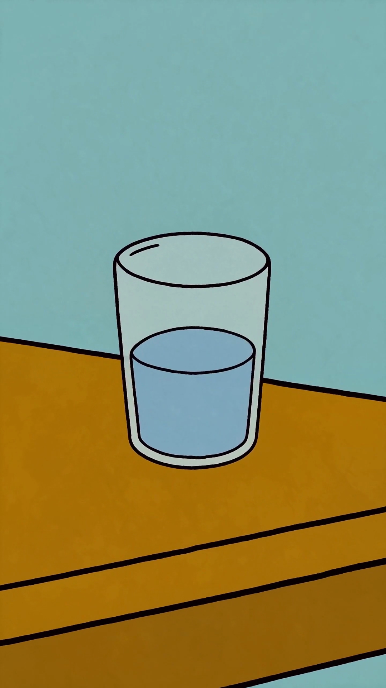

SEM TRATAMENTO,
O
BORDERLINE
PERDE
NESTA ORDEM.
PRONTO-SOCORRO
1
2
3
no mesmo mês
MEDO DE
ABANDONO
TRATAMENTO
devolve o volante
MANDA PRA QUEM
ESTÁ ADIANDO
O TRATAMENTO.
@drfabioschmidt
O
que
acontece
se
borderline
nunca
tratar?
Primeiro
o
sono
vira
caos,
depois
o
trabalho,
e
por
último
quem
você
ama.
Sem
terapia,
a
crise
deixa
de
ser
episódio
e
vira
rotina,
uma
ida
ao
pronto-socorro,
duas,
três
no
mesmo
mês.
O
que
mais
dói
não
é
a
crise,
é
o
medo
de
abandono
empurrando
cada
relação
ao
fim.
Tratamento
devolve
o
volante.